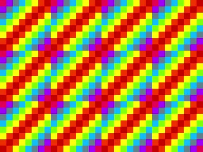

Experience
Turn over cards and remember their positions to find matching pairs. The hidden board gradually becomes familiar as each selection reveals another piece of information.

Description
A turn adds information even when the two cards do not match. The player gradually builds a mental map of the board, then uses a later reveal to complete a pair seen earlier.
The card layout makes progress visible as the unknown set becomes smaller. The interaction rewards attention to previous choices rather than quick movement through a scene.
Detailed features
Hidden-card layout
Part of the board is concealed, so each reveal adds information. The player uses earlier results to make a more informed choice on the next move.
Pair matching
The board rewards recognizing compatible pieces or values. A successful combination changes the state of the grid and creates the next set of possible moves.
Position memory
Part of the board is concealed, so each reveal adds information. The player uses earlier results to make a more informed choice on the next move.
Build summary
The project is presented with JavaScript · HTML Canvas. Its implementation connects the input or controls, the project’s changing state, and the rendered interface. The Source action opens the saved code or build material for this entry.
- Technology
- JavaScript · HTML Canvas
- Scope
- Interactive project
- Feature focus
- Hidden-card layout
Feature video
Project recording · 400 × 300 · Original resolution